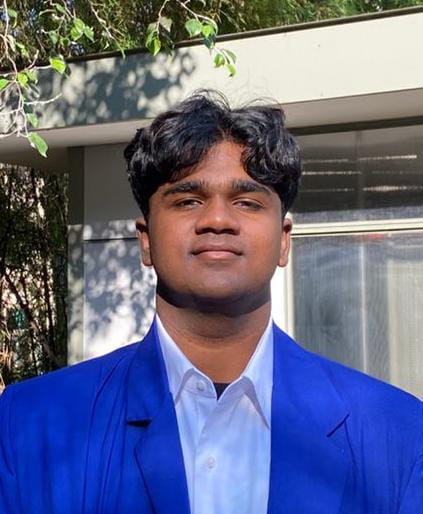

DANUS ROSAN
PROFESSINONAL GRAPHIC DESIGNER
| PROFIL |
|
Saya seorang desainer kreatif yang berkomitmen untuk mengubah ide menjadi pengalaman visual yang menarik dan menakjubkan. Dengan latar belakang pendidikan desain grafis dan pengalaman praktis yang telah saya tempuh selama beberapa tahun belakangan ini.
|
| PENGALAMAN KERJA |
| 2021 – 2022 |
UI Designer
Rancang tata letak halaman, ikon, tombol, dan elemen grafis lainnya. |
| 2022– 2023 |
Art Director
Bertanggung jawab atas aspek visual suatu iklan, baik itu elemen desain gambar, foto, atau tata letak. |
| 2023 – 2024 |
Icon Designer
Memahami pesan atau perintah program yang ingin disampaikan kepada pengguna aplikasi lalu representasikan dalam bentuk ikon. |
| RIWAYAT PENDIDIKAN |
2017 – 2019
Meitoku Gijuku Senior High School, Jepang
Fakultas Desain, Jurusan Seni Rupa Murni, Sarjana Seni
|
2019 – 2021
Institut Teknologi Bandung ( ITB )
Fakultas Seni Rupa dan Desain, Jurusan Desain
|
| SKILL |
| • | Illustrator |
| • | UI / UX Desain |
| • | Icon Desain |
| Saya Danus Rosan, berusia 28 tahun, dengan ini saya lampirkan biodata dan riwayat kehidupan saya
selama saya menempuh pendidikan dan pekerjaan saat ini dengan tujuan ingin melamar pekerjaan di perusahaan BRAVO. Sesuai dengan pengalaman kerja lebih dari 4 tahun
yang saya paparkan diatas, dapat saya pastikan saya akan terus berkembang dan menunjukan kelebihan saya dalam
perusahaan ini dan dapat mengembangkan desain produk yang ada dengan gaya desain yang lebih unik dan menarik serta humoristik. |
| KONTAK |
| 📞 | +6282176773402 |
| ✉️ | danusrosann28@gmail.com |
| 📍 | Jalan Kencana 03, Kecamatan Lengkong, Bandung |
|